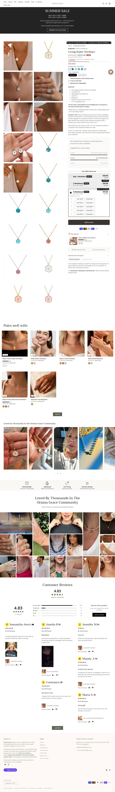

Fonte: coleção de best sellers.
Mediana do catálogo: $39.0 · faixa $3.9 a $69.0
| # | Produto | Preço |
|---|---|---|
| 1 | Living Water Necklace | $39.0 |
| 2 | Living Water Necklace In Silver | $39.0 |
| 3 | Elora Pearl Necklace | $36.0 |
| 4 | Elora Pearl Bracelet | $36.0 |
| 5 | Healing Cross Gemstone Bracelet | $39.0 |
| 6 | Child of Light Necklace | $36.0 |
| 7 | Healing Cross Beads Bracelet | $39.0 |
| 8 | Aurora Light Cross Necklace | $39.0 |
| Criativos únicos (amostra de 50 mais recentes) | 9 |
| Fator de duplicação | 5.6x (mesmo criativo repetido) |
| Anúncios por dia | 4.6/dia · ~32.2/semana |
| Criativos únicos por semana | 5.8 |
| Janela da amostra | 10.78 dias |
| Mix de formato e sofisticação | Estático/imagem simples com selo de objeção ("Tarnish Resistant"). Sofisticação baixa (nível 1-2). |
Sinal de "vencedor" = longevidade + nº de cópias + sobrevivência (a Meta não expõe impressão pra e-commerce). O % exato de cada formato exige inspeção visual de cada criativo, um a um — fica declarado como lacuna; a leitura acima é qualitativa, da amostra.
Origem do tráfego: United States 100%.
1÷10,6% por construção (tautologia), não um achado.| Headline |
|---|
| "Wear God’s Shield ✝️" |
| "Buy One, Get One FREE" |
| "Wear God's Protection ✝️" |
| "💎 Cross necklaces with meaning" |
O que faz o campeão vender, decodificado dos criativos e da PDP: é isto que se copia, não o número de anúncios.
| Big idea / ângulo | Vista a proteção de Deus. |
| Mecanismo único | Reposiciona a cruz de autoexpressão para PROTEÇÃO (medo/amor por alguém), mecanismo de urgência muito maior que "joia bonita". |
| Formato de hook | "Wear God's Shield ✝️" / "Wear God's Protection ✝️", alternando com "Buy One, Get One FREE". |
| Estrutura do presell | PDP direta com BOGO e ataque à objeção de qualidade logo no criativo ("Tarnish Resistant, Made For Sensitive Skin"). |
| Objeção principal | "Joia barata esverdeia / irrita a pele." Respondida com "tarnish resistant" e "sensitive skin" no próprio anúncio. |
O que copiar de cada página, com o link pra abrir e estudar.
| Home — o que modelar | Herói com a cruz e o ângulo de proteção ("Wear God's Shield"), BOGO no topo e selo anti-objeção ("Tarnish Resistant, Sensitive Skin"). 🏬 abrir home ↗ |
| PDP — o que modelar | PDP direta com BOGO e a objeção de qualidade quebrada no próprio bloco de compra. 🛍️ abrir PDP do campeão ↗ |
Widget detectado: judge.me, loox. Ele não expõe o aggregateRating no HTML da página, então a contagem pública não saiu por raspagem.
Transparência sobre os limites desta ficha. Cada linha mostra o que faltou, por quê, e o que foi tentado.
| Dado | Motivo | Método tentado |
|---|---|---|
| Contagem de reviews | widget não expõe aggregateRating no HTML | JSON-LD e widgets (Loox/Judge.me/Okendo). Apps detectados: judge.me, loox. A contagem só sai inspecionando a chamada XHR da PDP com navegador logado. |
| Pixel ID da Meta | não encontrado no HTML da home | Regex no HTML. O pixel é carregado via GTM ou via Customer Events do Shopify, que não expõe o ID no fonte. |
| Eixo | Pontos | Por quê |
|---|---|---|
| Sourcing simples | 2/2 | catálogo de 35, cruz simples do AliExpress |
| Ticket fecha sem escada | 1/2 | BOGO como mecânica |
| Criativo simples de produzir | 2/2 | estático/imagem |
| Mecanismo com urgência | 2/2 | "God's Shield/Protection": medo + proteção |
| Investimento de entrada baixo | 2/2 | ticket $39, catálogo enxuto |
| Sem dependência de autoridade | 2/2 | vende no benefício |
Nível é etiqueta de "pra quem serve", não nota de corte: 10-12 iniciante, 6-9 médio, 0-5 avançado. Toda oportunidade de dropshipping vale, muda só o perfil de operador.
Sobrevivencia de 94% (165 ativos de 176 criados), a mais alta do nicho junto com Sunday & Stone. Praticamente nada foi morto. Combinado com o dominio arquivado so em abril de 2026, indica operacao recente que acertou o criativo de primeira e escala sem precisar queimar teste. Girou o angulo campeao de "Buy One Get One" para "Wear God's Shield" (protecao), sinal de maturidade de copy.